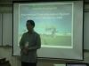

ICIS Workshop 2008
From ICISWiki
Back to Main Page > Workshops and Meetings
Agenda
Monday, March 3
1. Workshop Welcome 8:00 - 8:15
| ||||
|  | ||||
- Picture Taking 8:15 - 8:30
- 2. Activity Reports of ICIS Partners 8:30 - 10:00 (Chair: Arllet, Reporter: Warren)
- IRRI (Arllet)
- ICARDA (Akin)
- CIMMYT (Jesper)
- CIP (Edwin)
- UQ (Sandra)
- AAFC (Fran)
- NUNHEMS (Casper)
- BAYER (May)
- PHILRICE (Dindo)
- 3. Development of ICIS 5.5.1 modules 10:00 - 12:00 (Chair: Casper, Reporter: Vivay)
- Structural Changes in 5.5.1 (Arllet) see also Cropwiki: Features in ICIS 5.5.1
- SetGen (Candy), see also: TDM Set Generation
- GMSSearch (Beth), see also: TDM GMS Search
- InTrack (Beth), see also: TDM Inventory Tracking
- Workbook (Warren), see also: TDM ICIS Workbook
- Welcome Lunch in the Executive Dining Room 12:00 - 1:00
- 3. Continuation ...Development of ICIS 5.5.1 modules. 1:00 - 2:00 (Chair: Casper, Reporter: Vivay)
- Validation Tool (Ching), see also: TDM Data Validation Tool
- Diagnostic Tool (Ching), see also: TDM Installation Diagnostic Tool
- IWIS3 Installation Script using NSIS (Jesper)
- Data Comparison Tool 5.5 (Fran)
- Retriever Nunhems / Bayer (Rob)
- Browse (Graham)
- 4. Gene Management System 2:00 - 3:00 (Chair: Sandra, Reporter: Arllet)
- Current Design (Weng)
- GEMS Management Tool (Weng)
- GEMS and LIMS at ICARDA (Akin)
- Coffee Break 3:00 - 3:30
- 5. ICIS Schema Changes for v 6 3:30 - 5:00 (Chair: Graham, Reporter: Weng)
- Proposed Evolution of the ICIS schemata into release 6 (Richard)
- Proposed general design principles
- Complementarity to other public schemata and informatics initiatives
- Discussions for specific modules
- Proposed Evolution of the ICIS schemata into release 6 (Richard)
Tuesday, March 4
- 6. Development in the Management of Genotyping Data in ICIS 8:00 - 10:00 (Chair: Graham, Reporter: Weng)
- GCP Data for Rice (Don/Weng)
- GCP Data for Wheat & Maize (Graham)
- Marker-Assisted Breeding Data (Vivay)
- Molecular-Assisted Selection Tool (MOSEL) (Graham)
- 7. Using ICIS for Managing Diverse Phenotyping Data 10:00 - 12:00 (Chair: Graham, Reporter: Mali)
- GCP Requirements (Paul Brennan)
- ICIS DMS Workbook (Arllet)
- Discussion
- 8. The New ICIS Web Applications 1:00 - 4:00 (Chair: Mylah, Reporter: Casper)
- The GCP Data Source & Koios (Martin & Mylah)
- The Cropfinder (Juan Carlos)
- Web Applications at ICARDA (Akin)
- Standard Material Transfer Agreement (Ruaraidh)
| Tour of Genebank and GAMMA Lab | |||||||
| Dinner (Korean Restaurant) |
Wednesday, March 5
- 9. Database Backend Issues 8:00 - 12:00 (Chair: Jesper, Reporter: Candy)
- Approaches to Restricted Access to ICIS records
- Virtual Private Databases (VPD) Approach in Oracle at Nunhems and Bayer (Casper)
- Non-Oracle Approach (Arllet)
- Postgres as ICIS Local database (Ching)
- Discussion
- 10. The Use of Mobile Application for ICIS 1:00-3:00 (Chair: Grace, Reporter: Beth)
- Data Collection Using HandHeld PC (Grace)
- Data Entry Handheld Application: ICISwbk-Handheld (or ICISwbk-Mobile?:-) (Warren)
- Nunhems Breeders Seed Inventory Mobile Application (Rob)
- CIPSER - CIP Genebank Inventory System for Seed (Edwin) see also CIPSER System
Workshop Dinner (Tagaytay) Depart IRRI at 3:30pm
| |||||||||

| 
| ||||||||
Thursday, March 6
- 11. Genetic Resources Information Management System (GRIMS) 8:00 - 12:00 (Chair: Ruaraidh, Reporter: Ching)
- IRRI-GRIMS - Ella
- Global Crop Registry and Location Data Management - Ruaraidh
- Discussion on relationships between ICIS and GRIN-Global
- CIP Quality System for Genetic Resources: ISO 17025 - Edwin
- Inventory Data Management and Dispatch Module - Franco
- 11-3/4. Generation Challenge Programme Model and Platform 1:30 - 1:30 - Richard Bruskiewich
- More information at http://pantheon.generationcp.org
- 12. Break Out Sessions 1:30 - 5:00
- Features for IWIS3 Breeders' Application (Jesper)
- IWIS3 uploading and administration issues (Jesper)
- Management Neighborhood Tool (May)
- Management of Maize Pedigree in IMIS (William)
- Bulk-loading of Inventories (William)
- Pedigree Entry (Warren)
- Integration of GMS with Fieldbook (Jean)
- ICIS 6 schemata design (Richard)
| University of the Philippines Los Baños Choral Ensemble Concert: "Con Amore" <With Love> - 7pm (c/o Ching) |
Friday, March 7
- 13. ICIS in a Global Perspective 8:00 - 10:00 (Chair: Richard, Reporter: Mylah)
- The Generation Challenge Programme Relationship to ICIS - Martin
- 14. Software Development 10:00 - 12:00 (Chair: Martin, Reporter: Jesper )
- Review of Use of Cropforge and ICIS Release Management - Arllet
- Control of Documentation - Emmali
- Quality Assurance & Testing - Casper
- 15. Future Planning 1:30 - 3:00 (Chair: Graham)
- 16. Wrap-up 3:20 - 4:00 (Chair: Graham)
Minutes
Activity Reports of ICIS Partners
(Chair: Arllet, Reporter: Warren)
- Completion of ICIS 5.4 documentation
- Release of ICIS 5.4 in CropForge
- Management of IRIS DB
- Incoming/imported seeds of IRR are now curated w/ MTA and IP Stat
- Upload of central IRIS
- Update of IRRI SMTA Web Page
- Update of imported lines w/ separate records for the donor sample
- Update location of germplasms - all IRRI Genebank accessions has T.T. Chang Genetic Resources Center, IRRI, Los Banos as location
- Integration of other division/program
- Curation of the transgenic lines
- New installtion of local IRIS for the GQNPHC
- Discussion with staff of INGER for further migration of INGERIS to IRIS. Dispatch Module is not yet supported in IRIS
- ICARDA committed in ICIS since 2002
- Collection, collation, and converting all ICARDA breeding germplasm lists
- ICIS Training in September 2007 in ICARDA
- Experiencing resistance from staff due to additional workload
- Complete DMS for Barley
- Implement molecular data integration for chickpea Lentil
- Create local ICIS for wheat using CIMMYT Wheat ICIS as central
- Update all existing databases
- Experiencing a 2-year backlog
- Barley - GMS, GEMS, Web
- Arllet: Did training help somehow in the problem of lacking in staff?
- Akin: Only a few were interested, the whole of ICARDA needs to be energized.
- Akin: I have 500 unread emails
- Arllet: You need a secretariat, not a programmer :-)
- Graham: You have to be careful not to send a wrong message that the problem is due to the ICIS not working, but managers must be aware that it can't be done without the resources
- Address the IWIS2-IWIS3 deployment issues
- Cropfinder improvements and setting up website for maize/wheat/rice
- Breeders' Course in ICIS in Spanish for CIMMYT employees in Jan. 2008
- Adding data from AAFC and UQ to IWIS3
- Setting up ICIS for Wheat Germplasm Bank for Bibian Espinosa, who visited IRRI in 2008 to get inspiration & tips
- Setting up ICIS for SIDU (seed health unit)
- Setting up SMTA site and work on design of how to generate SMTA files
- Improve installation script of IWIS3 using NSIS ff. advice from Casper
- Correcting pedigree info in IWIS3
- Helping w/ IMIS pedigree parsing & identification (proximity search functionality) for Eduardo Hernandez, Scott Maclean, William Eusebio, not a final solution
- Transfer MAIZE Finder DB
Akin: You mentioned SMTA, I'm wondering if that would solve our problem? Arllet: SMTA is a requirement from a treaty, we created a tool in ICIS to give info about the MLS source and setup a website for it. Akin: Do you send materials not in Annex 1? Dr. Hamilton: Yes, we do... Graham: I think we need a thorough session for this, we'll put it at 1500-1600 in Day 2.
- ICIS models reused in CIP Inventory System (CIPSER)
- ICIS Location model
- ICIS Inventory model
- ICIS models reused in CIP Inventory System (CIPSER)
Graham: Do you use the GMS for identification? Edwin: No. Graham: Do you have a source of identification like GID? Edwin: Yes..
- DB of Australian wheat pedigress - Continuos update and distribution to Australian Breeders
- CIMMYT conversion to ICIS-IWIS3
- DB of Australian Barley pedigrees
- CAGE - CIMMYT Australian Germplasm Evaluation
- project ends in June 2008 but waiting for confirmation of extension for another 3 years
- Collate data from all other projects and use ICIS for data management
- Data available on a website - in Excel files
- Other projects with ICIS
- Australian wheat CRC
- Dept. of Primary Industries - Forestry - Data management using ICIS
- Phenome Atlas - Data from IWIS3
- 25,215 hexaploid pedigrees
- 9,588 durum pedigrees
- Difficult and time consuming process
- Version 5.5 developed in VB.Net
- more flexibility
- faster performance
- Met w/ SPARC biotech lab to discuss GEMS
- Tested the Workbook GEMS functions and setup templates
- Loaded and tested some genotypic data with Data Comparison Tool
- Fixed problem with the Durum workbook templates
- Reloaded durum databases
- expanded the phenotypic data for Durum DB
- Assisting Kevin Falk and Henry Klein-Gebbinck implement ICIS for Ethiopian Mustard
- Setup ICIS with the public DB at the University of Sasketchewan w/ Curtis Pozniak's group
- NUNHEMS (Casper)
- Maintenance and new functionalities for about 30 breeding programs / teams in ICIS (VER. 4 AND 5)
- Merged a new breeding programs with existing programs
- Migrated a few implementation from ICIS v4 to v5
- Finished pilot project linking ICIS-Nungems
- Still about 20 breeding teams to implement in ICIS!
- Diff. breeding programs
- Cucumber Long Nunhems-Netherlands
- Cucumber Long Shugang-China
- Cucumber Short
- Cucumber Pickling
- Team by team ICIS implementations
- one central and one local for each team
- All teams & all crops in 1 database -> ICIS-Global
- Jesper: Is the VPD in Oracle only?
- Casper: I don't think so, we've only used it in Oracle
- Akin: Why only local database, why not central?
- Casper: We've investigated that but the central is not that flexible, we need to implement a night procedure to migrate data from local to central every night.
- BAYER (May)
- Hybrid Cultivar Development already implemented in ICIS
- Current ICIS DB setup
- an activity level - agronomist, breeder,...
- a country level
- a central repository - contains the whole dataset
- Bayer naming conventions changed
- 7000 entries of MR/PR historical pedigree data uploaded to central database
- through PR 31102
- irrigated, upland, saline, special purpose, cool-elevated
- Integration of irrigated lowland breeding program to ICIS
- >3500 entries
- Rice Information System developed in 2006 within PhilRice office
- National Cooperative Testing (NCT) Data already in ICIS
- performing multi-location test in promising varieties prior to release
- ICIS-compliant projects
- Breeding for direct-seeded rice
- MAS studies
- 7000 entries of MR/PR historical pedigree data uploaded to central database
Development of ICIS 5.5.1 modules
(Chair: Casper, Reporter: Vivay)
- Structural Changes in 5.5.1 (Arllet)
Internal Changes
Schema
DMS- Study
GMS-LISTNMS
Changes in Middleware
Simultaneous access to ICIS db
New Return Value
CID/SID field recognition
Preferred ID (NSTAT=8) recoognition
Jesper- questions about CID/SID;
- SetGen (Candy), see also: TDM Set Generation
New Features of Setgen
New INI keys
File export path
CHECk_ATYPE 103, 104
103-Notes
104-Release
CHECK_NTYPE 7, 10
Defines in UDFLDS table
ensures all GID has N_TYPE
LAST_NAMETYPE_SEQUENCE
LIST_STATUS_OWNER_ACCESS
OWNER of a LIST can lock, unlock, finalize, and delete his own lists
DEFAULT_FOLDER_TO_OPEN
Other List Information form
applies to all list
Additional options in Generate GIDs in Batch Mode
Multi-user access of Lists
multi-access in Setgen
Pen icon- User can see whose editing the list
Browse only if someone is using the list
Save List As... in Browse Window
useful for users who want to use list based on central data
Functionality of Generate Derivatives in Batch Mode (B-) extended
There are two major changes in this form:
Include leading zeros and Numeric field width options can now be applied to DMS Variable section
Multiple Prefix and Suffix for Range option
Additional features for Import Germplasm List function
Import Gern=mplasm List
Save as Name Type, Attribute Type, Germplasm Date, Germplasm Location
Import Listname/EntryId to create a new list
tick box- Import CID/SID to create a new list
Added Save as Germplasm Date
Fill With Complete Germplasm/Name Type/Attribute Type Location
Set Germplasm as Management Root
Question from Akin: Database access/security to be discussed again on Wednesday
- GMSSearch (Beth), see also: TDM GMS Search
GUI Makeover
Derivative Neighborhood now displays the level
Relatives window now displays GID of relatives
Search by CID/SID - checks the germplasm table or search by CID/SID
Searching crosses by specifying the cross parents
Inventory Information in Stocks Tab
Question from Hamilton: preferred ID to have preferred name
at the moment it has the preferred name but not the GID. If is has IRTP etc. should also display both name and GID
Should not allow users to view the full name but just the ID. Hamilton suggest should be preferred ID first
Fran: Treeview
Casper/Arllet: state what should be the order or priority name/GID
- InTrack (Beth), see also: TDM Inventory Tracking
improved INI file sections
Searching Data using Barcode
Checking of Admin rights when logging as Administrator
-checks for username and password
Reserve and Deposit functions now available in Administrator form
Import function now available at user level
Additional field 'Date' in Import function
- Workbook (Warren), see also: TDM ICIS Workbook
Study Folders and Status
-hierarchy and study folder and files names using the down arrow;
-auto search while typing;
-plan for additional features- search by date;
-other buttons/tools
-used also fo loading- search or specify which folder you want your study to be loaded
-option to give the name of your datasets;
s
-can also delete folder
Sandra: where to place names for datasets
Warren: Description sheet
Multi-user Database Access
DMS_Status=1
-lock/unlock icon in editing
Import SetGen List
Mutant Selection
Randomization and Layout
-generate layout file using cropstat and workbook
GMS Names/Attributes Batch Upload
Valid Values
-user can view the valid values in db and in the worksheets your currently working on
-there was a request from Bayer Phils about outlyers data (extreme range data)
Split Workbook
-separate workbooks in different files
Speed testing for loading workbook
Casper: unformity in application (As attribute..)-workbook; (Save as attribute..)-Setgen
- Validation Tool (Ching), see also: TDM Data Validation Tool
Casper: Data validation for workbook before loading? Arllet: not yet implemented
Query Batch Update
- Diagnostic Tool (Ching), see also: TDM Installation Diagnostic Tool
Identify installation problem, recommend a solution, perform auto fix;
3 main components; configuration test, database test, DLL test
works on 3 database backends
checks structure of db (local and central)
auto modification of databases to ICIS Schema
checks information INSTLN table
MIscellaneous
Diagnostics results are grouped into four panels
Separate form for displaying components
Juan Carlos: can u use postgres and or mysql instead of MS Access db? Ching: Yes, it is possibele will further discuss
- IWIS3 Installation Script using NSIS (Jesper)
Check installation information and just follow default option 'OK'
66 users in db
Installation
-3 languages, Dansk, Spanish, English
-Setup: Crop: ISWIS4; username: GUEST; Password: XXX;
-Choose components: as you select components to install the disk spaces reduces-Install
-Issues/Discussions about IWIS installation in doc file.
-ICIS and ODBC icon in desktop
Graham: how to install? Jesper: basic structure installation
Graham: Prepare installation to some users; useful way to help people install IWIS3, discuss more
Jesper: actual compiling is faster
Casper: find someone to test and install, make steps that are easy for new users; more information non-technical people;
Jesper: being tested for different kinds of users, CAsper to test again installation;
- Data Comparison Tool 5.5 (Fran)
Introduce Data Comparison
Shown documentation in wiki
Line Vs. Line Comparison - allows users to create an output of data on particular lines that might be of interest. This query will only include studies in which all entered lines are present.
Line Vs. Line (with checks) Output
-preferred name and alternative name
Study Retriever - allows users to create an output of data on the lines in a particular DMS study that might be of interest.
Germplasm List Retriever - allows users to create an output of data on the lines in a germplasm list (created in SetGen) that might be of interest.
About - information about the version and collaborators
Excel files: 2 tabs phenotypic and genotyping data
Email Shawn for questions
- Retriever Nunhems / Bayer (Rob)
Worked with linked tables and views to retrieve data
Query takes place in MS Access and in Oracle
Multi-user: 2-5 users
Printable reports
Retriever for Pre-Breeding
Team specific;
maintenance is a nightmare
size grows quickly
not flexible when table structure
DST is linked to an oracle view db
work with pass through queries to access the data
all querying takes place in Oracle
Single user. default DST will be copied to user folder when starting Launcher
No data storage in DST
For reports switching from Access to..
VPD on switchboard table
-restriction in viewing the table
Generic tool;
All data in Oracle, VPD to filter data and that way chenge layout;
1 DST=less maintenance=more time for development
Edwin: Why use linked tables?
Rob: Flexibility of table may cause re generating study
arllet: pass through query is faster in oracle
Development of BROWSE
- Export of pedigrees
-Full pedigree tree for the list XXX
.OPT LIST=XXX opens LIST number XXX in BROWSE
.EXT LST exports the full pedigree tree for the open list in ICIS format. ICIS format shows all inbreeding generations and allows multiple generative progenitors.
- Truncated Pedigrees
-Added New parameter <lvl> to the following commands:
- .EXT LST lvl
- .ICP LST lvl
- .COP LST lvl
These will extract the combined pedigree tree for the open list up to lvl generative generations only.
.COP LST <lvl> computes the COP matrix using pedigrees over the last lvl generative generations only.
-Shown Plots.doc
- Illustration of the use of COP matrices in germplasm evaluation.
.COP LST exports .COP and GIV matrices in formats convenient for ASReml and CropStat
J. Burgueno, J. Crossa, P. L. Cornelius, R. Trethowan, G. McLaren, and A. Krishnamachari. 2007. Modeling Additive x Environment and Additive x Additive x Environment Using Genetic Covariances of Relatives of Wheat Genotypes. Crop Science. 47:311–320
Jose Crossa, Juan Burgueno, Paul L. Cornelius, Graham McLaren, Richard Trethowan, and Anitha Krishnama. 2006. Modeling Genotype x Environment Interaction Using Additive Genetic Covariances of Relatives for Predicting Breeding Values of Wheat Genotypes. Crop Sci. 46:1722-1733.
Irrigated RYT 06DS excel example
Random RCB Mode with A matrix and AR1 Error SED Minimum Mean Maximum AR1 REP GEN 333.1 256.8 306.2 335.0 0.7498** NS ** 342.6 278.4 315.9 337.9 0.4552** NS ** 385.7 399.5 465.3 491.1 0.1330ns NS ** 356.6 251.1 313.0 341.6 0.3565** NS ** 397.1 350.9 391.9 406.1 0.1630** NS ** 514.7 437.4 512.2 541.2 -0.0822ns ** ** 417.8 244.0 410.7 451.7 0.1328** ns * 377.3 411.8 451.4 505.1 -0.4163** ns ** 465.4 351.0 420.1 466.5 0.7485** ns * 408.1 368.5 401.1 413.9 0.1535ns NS ** 363.2 104.1 225.7 440.1 0.2627** ns **
Not yet available in Cropforge
Gene Management System
(Chair: Sandra, Reporter: Arllet)
Current Design (Weng)
- Central GEMS consists of
- generic GEMS_NAMES - will contain all the names of any entity within the GEMS database
- GOBJTYPE - any table in the GEMS database
- GEMS_MARKER_DETECTOR
- GEMS_MV - contain all the alleles for all marker detectors
- GEMS_PD, GEMS_COMP - pertains to the protocols used by the marker detector
- generic GEMS_NAMES - will contain all the names of any entity within the GEMS database
- Examples of loaded data in GEMS: SSR Data, DaRT data
GEMS Management Tool (Weng)
- GEMS CATALOG form - information about the marker, the variants found using the marker, synonyms of the marker
- BATCH LOAD tool - it requires a file with tab delimited columns and the information in the columns is similar with the marker sheet used in Workbook
- GEMS LIST - allows users to create a list of markers and the associated information (like found variants) is shown in a report
- TOOLS in WORKBOOK - loading GEMS information from a Workbook file to the GEMS database
- Questions & Answers
- Akin - Did the currently stored data directly come from the machine?
- Graham - The information currently stored is from publications.
- Dr. Singh - Are there other marker system supported by GEMS?
- Weng - Yes like isozymes and I think if there will be other marker systems, it will be easy to fit it in.
ICARDA GLIMS and GeMS (Akin)
- Tool to store, organize and manage the data
- The approach is to have a web application that works through web services and not a standalone application.
- Images are also captured and stored
- Molecular data can be stored in readily use format
- Tools for batch loading and input to the tool is a file which is a direct output of machine
- Integrated environment for storing ang managing data
- Materials can come from the ICIS-based database and other database system sources. These materials are used for the LIMS
- Outputs can be gel images etc
- Examples of functions
- -manage the information of DNA extraction
- -manage and track PCR
- -there is a workspace for each user
- -search the database depending on a range of different parameters and can be exported to different formats (e.g. HTML, XML, Excel etc)
- There are 3 level of security access to the web LIMS and GeMS: administrator, users and guests
- Achievements
- -uploading ICARDA lab procedures to GLIMS
- -different ids are accomodated (ids from ICIS, accession ids etc)
- Next Step
- -visualization tools
- -developing an interface for retrieving data from ICIS-DMS
- -output
- Questions & Answers
- Sandra - is the ICARDA GEMS the same as the current ICIS GEMS
- Akin - it is built on the 1997 ICIS GEMS
- Arllet - how similar is the ICARDA LIMS with the ICRISAT LIMS?
- Akin - there are many complications in ICRISAT LIMS and the flow of process is not very flexible
ICIS Schema Changes for V6
Proposed Evolution of the ICIS schemata into release 6 (Richard)
- Casper : are there any plans also of changing applications
- Richard : there are other systems that might be useful in the development of current system. Consider relationship of ICIS to a higher level of Model (Generation Challenge Program). Current model has tables that have very specific information like the gems_marker_detector has very echnology speficic information. Polymorphism detector does not have the same connection to the Genimic Feature Protocol
- The topology of current and proposed schemata is almost similar. A lot of the stuff in the domain model is contained in the entity. Capture the generalized data into the gems_entity. It is the focal point for other sub classes. Gems_entity documents a lot of generalized information and searchable in a global way.
- Another simpler sample alternative model is the LDS data.
- www.gmod.org -> bring together all models and databases. They have a schema called chado. Core models of Chado are in the proposed new LDS schema. They also use trait, scale and method. Some tables use vocabulary and point to that using foreign key.
- Arllet : on terms of generality. Like the Issue in DMS, the speed was affected by its generality.
- Richard : Design all names table to follow a consistent design.
- Richard : the structure of a names table (like LDS) can have the same structure as the other Names tables in the ICIS table. We could make a centralized names table. In the breakout session we can have a first stab at modifying the schema structures
- Arllet : Edwin has modified some table structures
- Edwin : There are differences in the table relationships
- Graham : there's a new need for another implementation of the location (village).
- Richard : anybody has concerns on the schema
- Akin : the incremental approach seems to work. The concern to change the schema is to eliminate future bottleneck
- Arllet : For Location data I think it is ok to be remodelled. Gems can also be remodelled since not much application has been done
- Dr. Hamilton : old data does not have much information. Some only has country. Another area is curation like curating GIDs. An accession from WARDA has several copies of that GIDs and with have the same number. which one refers to the accession being managed by a certain institute. Nothing in IRIS has information on who manages that copy of these GID.
- Richard : more discussions during the breakout session on Thursday
- Akin: requires a two-pronged approach, from the curator and from our own end. There has to be a way that we can link information.
- Paul Brennan : The "if it's not broken then don't fix it" to be negative. There has to be a deeper look at it. Should have a group of people that are heavily committed to developing. There might be some other time and persons to be involved.
- Graham : Richard is also building Ontologies. If there is really a good system for Location data and Gene Management System. Akin, I have a thinking that you took the simpliest system to develop your system
- Akin : Apart from making life easier, I believe it is stable but I always want to have improvement on the User Interface. ICIS has a beautiful structure since it is modular.
- Richard : I agree that this is really not the best venue to discuss the design changes but I think we already have a bird's eye view of the issue.
- Graham : We're talking of the GEMS meta-data and the problem is not many are able to share data
Development in the Management of Genotyping Data in ICIS
GCP Data for Rice (Weng and Arllet)
Akin : loader and Retriever is done in Access?
Arllet : yes
Akin : CAn I use the retriever in Oracle
Arllet : Yes, but there is still a need to modify the code for linking to Oracle
Akin : will it work in MySQL?
Arllet : It could but, we have not tested it yet.
Casper : we can also use pass-through query in the retriever
Graham : Jesper, would you have experience in using retriever in SQL Server?
Jesper : No. We have not tried the retriever
Akin : we should use a form using the web services
Graham : There will be a web presentation on web interface in the afternoon. Is there heterozygotes?
Arllet : I have not tried it in the GCP data but we have a sample query in Vivay's sample data.
Graham : The query is in a single study?
Arllet : No. It's from all GCP genotyping studies.
Graham : The retriever is powerful enough to show the retrieved data into the output that you want.
Paul : There no additional software is used to output the data?
Arllet : No other application was used to retrieved the data, I just used the retriever. I just used the queries in MS Access to retrieved the data.
Data from Marker Assisted Backcrossing (Vivay and Arllet)
Submergence Data is used as an examples since they are the first one to submit a complete gentyping data.
That is an example of a different naming of alleles.
Graham: The Researchers actually gives a data but we want a different format. So, what we do is go back to what they have given us and transform the data into the format that we want.
Graham : Now we need to show that the data in the workbook has information in the GEMS database by retrieving the data using the tools that we have in the DMS workbook.
Graham: What does it do where it cannot find the names in the database?
Arllet : If you click the "register new name" it will be added to the database?
Graham : Does it give warning?
Arllet : No. It just assigns a 0 to the ID. O is not a valid ID in the database.
Graham : We should give warnings for those markers that we don't have. The markers sheet may well be filled out or be retrieved from the GEMS. We should also be able to retrieve the preferred Names for those allele IDs the same time it we retrieve the Allele IDs.
RETRIEVER
Graham: Can you show were the GENE SUB1. We can filter the BC1F1 and only show all the ABs and we can show the genotype were there are mostly As. After the filtering, we can now show to breeders the data that they are interested in.
Dindo : Can you also show only those genotypes with most A's?
Graham : Yes, with some more computations. And we are also interested not only on the number of As because we might also be interested in the distances because not all As are the same. We can also a use the map distances to compute how close a genotype to another.
From the data output of Retriever we can show the genotypes that BC2F1 will use.
Applications for Molecular Breeding (Graham)
The following documents concerning the design of tools for Molecular Breeding were presented and discussed.
Graham: Is there an application similar to MBDT?
Casper: There has been a discussion at Nunhems but there are no final details.
Using ICIS for Managing Diverse Phenotyping Data
(Chair: Graham, Reporter: Emmali)
GCP Requirements (Paul Brennan)
Data Input Component of CropGen International Consultancy for GCP
Segment 1
- Current GCP System
- Proposal
Paul: ICIS has the capability and platform they've been looking for.
Paul: 12 main crops to implement in ICIS. Not barley. We have already 3.5, we just need the other 8.5 main crops.
Akin: Why barley is not included?
Graham: It has genotyping study.
Paul:I don't know because I'm not involved in the decision making.
- Features of Stored Data
Fran: (ask a question on analysis)
Graham: It could be the method of analysis. Methods for measuring things and methods for analysis.
Graham: Need to Contact Steve.
Akin: IT is using ICIS.
Graham: We have responsibility to do it in rice, wheat and maize.
Segment2
- Components
- Purpose of attending this meeting
- GCP Data Management (Draft)
Paul: This is something that we will all be responsible for writing.
- Guy Davenport Group (Draft)
- Programming Language for Wizard
Fran: Why not use macros?
Guy: Basic thing that macros will be disabled by default. Talk to Marco.
Paul: That's a CG issue.
Guy: Default is to ask IT managers to use macro.
Warren: How is this different with the ICIS workbook?
Paul: The users will be from Guy's group. We're talking of developing workbook that is GCP...
Guy: ...by making a user friendly workbook.
Graham: What Warren asks is how can a workbook be meant to be used by an end user instead of an expert?
Paul: Not to introduce new things that will complicate ICIS.
Graham: Nothing can stop to do tools for ICIS.
Richard: ICIS is the main inspiration in the domain model. Can get ICIS compatibility.
Akin: Differentiate between the underlying structure database and the interface. Everybody can have the same database but different interfaces. If interface.e is not user friendly enough, it can't be used.
Paul: Wizards can be made as user friendly as possible.
Akin: Maybe individuals can present prototypes or idea on what user friendly interface looks like. And ask which we can use and apply as universal interface.
Paul: Consultation...
Akin: Resource may not be workable.
Guy: We'll generate output in web interface. Use ICIS to generate GIDs.
Sandra: I'm already doing in my project.
Graham: To have data curation and provide templates.
Fran: Will wizards be helpful?
Graham: Yes.
Richard: The proposal is being funded? What's the scope of the data. The scope is different from the Phenotyping data?
Paul: SP4 is the subprogram for this.
Richard: Microarray sequence data. What is the scope of type of data?
Paul: Whole range of any data. The concept is lot.
Richard: ICIS is main target for genotyping. ICRISAT have database similar to ICIS but not ICIS. Other partners have different platform database.
Guy. GCP domain model is meant for querying database while the project is meant for input of data.
Richard: The domain model is not only meant for accessing data although most of the efforts are doing it.
Paul: Use ICIS but with other workbook.
Guy: The other crops for implementation is up to GCP, the 3 main crops are up to CRIL.
Paul: I think you cannot ask ICRISAT to curate data. What GCP can do is provide investment necessary that the database are curated, maintained and developed.
Akin: My understanding is that all data curated will be in a repository and combine it into ICIS platform? Im trying to think a rationale, is why do we need to develop workbook for ICIS.
Graham:...
Akin:...
Guy: First, existing templates can be transferred by workbook into ICIS. The phenotyping template involves a lot of things. The idea of using ICIS as curator of template.
Akin: We already have the information in ICIS, why do we need to generate them again.
Graham: The workbook templates are for phenotyping.
Guy: Template is generation of workbook.
Paul: Simplified and specific to a task. Akin: W get the data from the repository and propage the data using ICIS.
Guy: This is only from the new data and not the data from the registry.
Akin: This going to be template that GCP has not awarded?
Graham: For both.
Akin: Just ignore me.
Graham. Does that answer your question? The answer is both.
Akin: ... to be able to make a decision...
Paul: The question is that is it a waste of money having 2 systems?
Graham: There is no incompatibility. From that point there will be curated data where data can be readily available for all studies and there are also metadata. So there is no conflict at this time.
Tom: The point of data collection, run on same tracks, and there are duplication there.
Paul: No, we will allocate GIDs for GCPs repository.
Tom: Coconut is not in the list, but you have it in the repository?
Paul:...
Tom:...
Akin: For me, since i adopted the ICIS standard, i dont have problem. But if required to submit in GCP format, they will require in ICIS format it will give me headache.
Paul: It will not...
Akin: ...
Guy: GCP requires data place in the registry, if data is in ICIS it just needs a registry.
Richard: If any crop group is capable of using GCP platformcompliance, if not put it in registry.
Akin: GCP has not taken a stand that GCP will not require to use ICIS?
Paul: The ...
Graham: Is it worthwhile to go on with the workbook?
Paul: With Sandra ...
Graham: Arllet to go on with workbook presentation.
Data Management System (Arllet)
Arlett
- Data Model of DMS
- DMS Workbook File
- Sample Workbook Files
Graham: How its working with Sandra's project?
Sandra: Templates are used in genotyping...
Graham: Implement the same workbook for phenotyping. You mount also the Excel file?
Sandra: Yes... but when I have time I produce one similar to a workwook...
Graham: You are also doing some formating in uploading in ICIS.
Graham: Warren have created a lot of wizards.
Sandra: I've been using some.
Graham: Maybe you can give some feedback to Warren...
Guy: Have a discussion for this...
Graham: We have two sections to discuss...
Paul: (To Guy) If there are CGIAR entities committed to ICIS, it has to be maintained in the ICIS community. And talk about the options.
The New ICIS Web Applications
- The GCP Data Source & Koios (Martin & Mylah)
- The Cropfinder (Juan Carlos)
- Web Applications at ICARDA (Akin)
Web Applications: GCP Data Source, Legends and Reality (Martin) GCP integrates data Several ways to do
- be strong, and all will follow, eg: Microsoft, GO
- be smart, create applications, everybody enjoys, all will integrate, eg Eclipse, Firefox
- be realistic, adapt other people data to suit you
GCP combination of first 3 then 2 -> Smart but Realistic
- For java developers
- Set of rules (API) how to adopt useful data
- Useful means: what you want
- Useable means: owner allows you to use
- Format can be db, excel, txt etc.
- Rules allow:
- ..
- ..
- http://irfgc.irri.org/pantheon
Of course ICIS is a data source for above !! What is it, what is status, who
Mylah gives a demo of internal IRRI Website for ICIS
Website:
- is internal at IRRI,
- has kind of TABS at bottom, easy to browse over tabs
- developed in KOIOS Presentation layer, see: http://irfgc.irri.org/pantheon/index.php?option=com_content&task=view&id=154&Itemid=1
Query PER Study
- Input STUDY NAME
- Select DATASET of DATASET, based on FACTOR NAME
- Filter options available
- Submit button, first 20 observation units for this data set are shown fast
Flexible layout for column sorting and column order
Discussion about location ID what is it country or what….labels, levels…. Select which factor to include in the view…still under development.
Same web application works also also for wheat and maize, same structure !
Retrieving of data goes in batches to gain performance Tried for 1.000.000 records less then 25 seconds for windows based applications, On a virtual server with Linux and Linux only 14 seconds. Application can jump from batch to batch, very effective -> good performance.
There is one virtual server that hosts IRIS, IWIS and Maize.
Graham to Akin: If ICARDA system is GCP compliant then can plug in to this web application.
This application is a KOIOS web project
- Also outside ICIS it should be useful
- Uses web services, web application setup in container, ICIS databases in same container
Data sources outside IRRI have to use MOBY for that
Name of technology SPRING(?) Open source , add content to certain page/tool documentation trackers This is also basis for all IRRI website Full feature management system, user management tracking system, use available templates. Good for web management
Questions Ruaraidh: what are options GRIM? -> Martin: 1 option if you find data resources to use, Working with bio data verity, using domain model. Writings manuals quite as ICIS GCP Client, if successful then all database available in future via this way, Martin in April Rome to check
Ruaraidh: When available? Martin is only co-worker, hopes to get kind of ready by April, programming matter of days, max a few weeks,
Team and planning be presented, more documentation on Pantheon: http://irfgc.irri.org/pantheon/ Also bug tracking in CropForge similar to ICIS communication.
Juan Carlos for next presentation: CROPFINDER web-based What is it:
- A. design outputs, FACTOR, STUDY, TRAITS
- B. design queries, Query and filter based on selected
Can output download as xls CROPFINDER uses data warehouse, and can query OVER multiple Studies
Disadvantage
- SQL server tested only
- Windows needed on user side
Improvements since June 2007, see presentation
- Performance
- % as wild card available
- …
Next
- …
2 websites in live presentation
Live demo for wheat on db in Mexico At Cimmyt central db they store more types of wheat. (4 types), so crop also available
Questions SQL: Query is created on the fly, standard SQL
Discussion: Now we have 2 Applications, important questions for ICIS: 2 parallel tracks to be continued?,
- KOIOS track, very general query engine, at this moment PER STUDY
- CROPFINDER different approach, (re) structures the ICIS database, builds a warehouse table, with a field for every variable: trait-scale-methods.
Conclusion: We should finish up with 1 interface that combines both items (technique from KOIOS and functionalities from CROPFINDER.
Guy has looked in JUAN program and added Java-code to it, technology almost is same CROPFINDER standalone Genomedium - > to be made as WEBAPPLICTION
Question from Sandra: First version that Weng has installed has possibility of traits, but where is this now. In new interface it is not yet shown, available in background, but in old interface also ONLY WITHIN STUDY and NOT over STUDIES.
Martin: CROPFINDER better, db warehouse gives better speed, maybe move to technology to KOIOS. User-interface CROPFINDER is old fashioned, KOIOS better interface for user. Richard: Guy implemented backend CROPFINDER in ….BIRD…… Business = commercial library lot of tools to allow showing data in different ways, looks better java interface.
Conclusion: CROPFINDER AND WEB KOIOS SHOULD MERGE
Presentation of Akin of web-interfaces at ICARDA Akin’s opinion: web-enable everything Problem with Java’ success depending from limitations/needs client side ASP is better, does NOT need anything special on client side, all is on server site !
ICARDA has 3 crops implemented, Lentil, Chickpea, Barley Have only one database (per crop) on the servers, available via intranet. Have NO local databases installed at Local PC’s.
Present a simple user interface, every non-ICIS user will be able to work with this without any training.
Discussion: If Juan and Martin agree, and they can do DMS-interface easy for Akin
Akin is showing ICARDA-LIMS, my workspace, db independent, here running on MS-SQL LIMS Tool has export possibilities also to GCP-format
SMTA
(Dr. Hamilton)
- The SMTA - Underdevelopment is a "black box"
- The MLS attribute of a germplasm is not propagated to its management neighborhood (a copy of azucena sent to GRIN before is not MLS designated even the copy it came from in IRRI was recently MLS Designated. This is because it was sent before the IRRI copy was MLS designated
- If it is IRRI or INGER materials, it can be either SMTA-MLS or SMTA-UD if it has one or more MLS ancestors
- Akin: You noticed that sometimes SMTA document requires lots of pages to give the list.
- Ruaraidh : It will be discussed in the next meeting of the governing body how to handle such kind of situations
- Graham: When do we promote a line to SMTA-MLS?
- Grace: Once it is released, it will SMTA-MLS.
- There are some still pending issues such as IRRI has to go online on our ordering system
- There are plans to create centralised database of providers/recipients (permanent identifier PID for a recipient) by the Treaty
- How much shall we do in IRRI and what should be done by the centralized database?
- Selecting germplasm might not be centralized.
- Graham: I think reporting new MLS designated lines can be determined by the date the attribute is given
- Akin: We have a web interface that simulates the process .. what was sent, what was received, what are the nurseries where those materials were tested
- Graham: The centralized database for providers and recipients is kind of a challenge.
- Shamzie: We will give the rights to the providers to register their recipients.
- Graham: The idea if somebody wants to order something from IRRI needs to request a PID from the centralized database.
- Ruaraidh: It is a challenge for the Treaty to manage it.
- Graham: The interesting idea about this is that this is not just about CGIAR but any genebank and seed providers
- Ruaraidh: The only difference is that the ID for MVPGR is the same ID in the Treaty and in your database.
- Graham: The trick is to maintain the identification consistent
- Ruaraidh: The issue is really waht should be private and what should be centralized
- Akin: The summary the people will see should be the one in your genebank.
Database Backend Issues
Approaches to Restricted Access to ICIS records
- Virtual Private Databases (VPD) Approach in Oracle at Nunhems and Bayer
Akin raised an issue....
Casper: Not an issue since Central and Local are in the same server
Akin:Multiple transactions in a database; problem of overhead
Casper: Oracle specific solution; optional solution for others...
Akin: Not against the solution ...
Graham: Everything is possible...
Casper: 3 fields added for tracking; has fields for timestamp
Graham: I cannot see any problem running the solution; triggers are applied only in upload; wouldn't make any diff. to our application
Ching suggested stored proc in MySQL Postgres
Graham: Is it the same or something bigger and not just stored proc? Seems there's a little bit extra.
MayAnn suggested SQL as stored proc i.e. apart from DLL
Arllet: Not all database has the same implementation of stored proc; easy to maintain in DLL than maintaining diff. stored procs for all databases.
Ching: Faster in stored proc but disadvantage is you have to maintain all stored proc for all databases
DEMO (Pencil icon or edit icon in List Manager; Advance a Line one Generation)
Akin: point of contention; modified by someone and it's locked...
Casper: Locked the list bec. someone is working on the list
Casper: Are you asking if they can connect to the tables at the same time? ... This solution is the same as working in Excel
Akin: Other users has to wait;there's a contention
Graham: Yes, that's life. :)
Arllet suggested if a user wants to add something in the list, save first in another list.
Casper explained: In Nunhems, does not happen often that users work at the same moment on the same list; I do not see a problem.
May Ann: How abt. same names...
Casper: Autocommit is off
Casper: I did not test it extensively with same names
Videoconf: I'm not sure if we are to depend on oracle; we want to have flexible databases; we want also filtering but with flexibility with other databases
Richard: What presented is a specific implementation; Nunhems has bleeding edge in terms of technology; industrial strength
Videoconf: Icis connects via odbc
Richard: We try to maintain platform independence; we use Hibernate, etc.
Jesper asked abt. extra fields/columns.. How abt. indexes in VPD functions?
Casper: Not indexed at the moment but we'll work out the best approach in consultation with Oracle experts
DEMO casper: GIDS not in sequence because of simultaneous adding of new germplasms from diff. users; there's timestamp; data is seen depending on a user
Sharma: Can u tell us anything abt the hardware
Casper: Not an expert on the issue ...
Graham: Interesting philosophical topic; interesting possibilities in terms of comparative biology;
Richard: Why is nunhems doing it..?
Casper: Working on a crop level and not on a team level anymore..
Richard: Integation among teams can be applied to others
Graham: Yes, when they want to see each other's work
Arllet: Stored proc;
Weng: Stored procs and functions are implemented differently in MySQL and Postgres
- Non-oracle approach
May Ann: Possibility to which columns to apply the restriction
Ching: Seb mentioned abt...
Casper: User id will be the same; user is connected
Arllet :...
May: I think its doable ; add only userid as extra columns
Arllet: Not sure if all tables should be hierarchical
Casper: Need not apply extra fields for VPD functions in all table... germplasm, list study, etc. are the major ones that need VPD function
Akin: Not a problem in factor, variate bec. it's for one study only
Arllet: In workbook, there's a facility to see all factors as auto-fill of cells
Postgres as ICIS Local database
Rob: Are u connecting via ODBC?
Ching: Yes; check connectin string; i'ts in INI
Casper: Why is there OK in retriever when there's an error message that comes up; for user, it's not ok
Akin: You've tested in open source databases; will ICIS database be migrated to Linux environment?
Ching tested postgres in windows
Akin: Microsoft SQL Express is free and its in windows environment; suggested to close ODBC connection as a solution for the errors that showed up
Richard: Not anybody wants to run windows; Ching is just making a comparison; no absolute technology; just comparing two options
Graham: Move on pls... :)
Ching: Not an issue of exclusion
Arllet: Cril issue whether Postgres or other databases
Weng suggested another approach to testing. Test the DLLs...
Graham: What are we doing with the problem that pops up in Retriever?
Weng: Possible solution as well is to list ODBC drivers that matches the drivers of databases
Juan Carlos: Tested cropfinder for ...
Graham: Issue of distribution; Jesper's installation copies files
Graham: Did they test the web apps/java codes in Postgres as well?
Ching: No testing done yet bec. No Postgres installed yet in the server
Akin: I hope you don't have the impression that I've been paid by windows. :) Stressed the issue that testing should've been done in Windows env. as well..
Arllet: Out of staff and out of time;
Akin: I went through the trail as well.... MS SQL Express do not have limitations as the ones I've tested; Point is to try microsoft technologies
Graham: Platform independence is the plan for ICIS; we look forward to your extensive evaluation of ICIS in MS SQL Express next year. :)
The Use of Mobile Application for ICIS
Data Collection Using Handheld PC in PBGB (Grace)
Grace : no actual implementation in using handheld because of many issues on the use of such technology
- Retrieve SETGEN list thru the Workbook
- Transfer file to HandHeld PC
- converted to pocket excel format
- some limitations of pocket excel : worksheet cannot be modified to a certain format, some fields can be overwritten while uploading data
- Proofreading the data
- Transfer data to field book
- Print the field book
-plan to upload in the handheld pc for the breeders so they can fill up some columns with data while they are in the field
- Plans/Needs
Casper : ...
Rob : show you a handheld that does not need to be restricted in any format..show you later...
- Data Validation Tool while entering data in the handheld
- Electronic fieldbook
- Inventory data
need to be able to access the records and other information
Graham: how do you currently handle the data in excel?
Grace : we copy and paste data to excel
Graham: so you copy data to the workbook?
Grace : Yes..
Graham: you said you want barcoding? what do you want to be barcoded?
Grace : in workbook, it already has a barcode, but only one column is barcoded.
Graham: what field do you want to carry a barcode?
Grace : the designation and destination
Casper : we normally use a short code that you can use easily use as the barcode...make your codes as short as possible because longer ones tend to be a problem especially in the field when they get soiled, it is harder to barcode when you have small printouts.
Rob : the use of barcoding is not the safest solution..
Casper : size of barcode labels outdoors should be bigger than indoors...
Paul : i have a problem what was in the handheld does not coincide with what is in the actual plot. so what we did was after a number of plots, it gives a signal that you need to check if it has the correct plot/data...
Hamilton : it is better not to enter codes but colors instead..it is easier and would be less errorneous. ..on using handheld indoors... Graham: if you use a scanner, that would not be a problem.all you need to do is scan and it doesnt have to be in the plot where it is really meant.
Grace : ....
Paul : you can prevent your machine from accumulating dust like set a protocol to get away from the pc..
Data Entry Handheld Application: ICISwbk-Handheld (or ICISwbk-Mobile)(Warren)
Rob: why is it hard to use the hand-held when you can just copy the flat file from the pc to the handheld?
Warren : as what Paul said, there is a problem of data integrity when the breeder is in the field....
Graham: is it possible to get a workbook sheet and upload it to the handheld?
Warren: yes it can be provided..
Graham : is it available already or not?
Warren : yes, it is...
Graham : you would want a function to export this columns/fields from the workbook to the handheld pc..then downloading it back to the workbook.that would be a function that you would want..
Warren : ...explains the handheld workbook....
Arllet: the validation coming from the database, you can setup rules to the handheld as well
Graham : Casper, how do you handle the workbook in the handheld?
Casper : we export it to a text file .....then import it from the text file as well..
Rob : ...
Graham: in making this work with workbook...
Casper : ...
Warren : i have 3 languages in mind in developing this application in the handheld and see which of them gives faster performance...
Rob: the layout is provided...
Casper : is this layout easy to be uploaded back to the workbook...
Warren : i want only to export the observation to a text file...i will have to export each variate to a text file
Rob : is it ok to have many text files for that? how will you import it back to workbook?
Warren : well, i still have to implement it...
Edwin : we use the Pocket Access where you can transfer data from the database to the pocket pc..
Warren : what kind of handheld is this?
Edwin : Windows Mobile
Casper : Windows Mobile cannot run pocket excel...there are applications will not run on this...
Rob : there are also differences in the applications so you need to know the proper combination of applications that you need to download.
Nunhems Breeders Seed Inventory Mobile Application (Rob)
Graham : how much time is the scanning of the barcode to weighing the seed in the bag?
Casper : we have a scale attached to the handheld...
Graham : so you have the bag with the seed then you have the barcode in it, then you scan it...
Casper : ....
Graham : so somebody else has cleaned the seeds and put them inside the bag
Casper : there are two people working ...first scan the bag..then the other weighs the bag...
Rob : one person is telling if the weight is stable then the other records it...
..on script used in the handheld....
Graham : and that' s your definition or the default on the program?
Rob : it's the default on the program..
Rob : ...explaining details on their handheld...
Casper : ...more explaining....
Graham : so for your inventory you are still using DMS for storing the data..
Casper: yes..
Graham: even before we had the IMS
Casper : yes, we had a disadvantage since we cannot see the details in SETGEN
Graham : i guess the other thing that you dont have is the transaction for each balance...
Casper : what they do currently now is they see the available seeds in the DMS Workbook...
Graham : Beth, you had all the balance and the scanning in InTrack now..
Beth : yes...
Casper : Maybe we can talk next week..
Beth : sure..
CIPSER - CIP Genebank Inventory System for Seed (Edwin)
Rob : you use different kinds of labels..you use that for the same purpose?
Edwin : for seeds we only use one type of label..for tin, another kind of label..but use the same printer..
Rob : can you use one label on one day and the stickers on another day?
Edwin : yes..we do that..
Hamilton : what about durability of labels...the thermal printers and labels and the laser printers ..we use the laser printers for durability of 100 years...
Rob : it's actually a combination...the type of label and the type of printer...
Graham : how's your breeding information..hows that integrated with this..
Edwin : for inventory.,.we are using the germplasm tables
Graham : where do you keep track of crossing histories
Edwin : at the moment we are using this for inventory..but for the generation model is different..
Graham : this is for genebank right? so how do you manage the breeders' crosses..
Edwin : they do not use any system..in excel files..for field book, yes we have a system..
Graham : there's no direct connection of the genetic resources with the data for breeding lines..
Edwin : they make use of Accession numbers in the excel file.
Genetic Resources Information Management System
IRRI-Genetic Resources Information Management System (Ella)
Q&A:
- Jesper: you were commenting that you are not using icis, what is the reason you are not using it?
- Ella: our original interface is very simplified (but based on the original Oracle forms). integrated with icis in the backend
- usda: are there enhancements requested for the user interface?
- Ella: yes, ching & I developed this, and we are receiving feedback
- Ruaraidh: most of the functionality is there, we are starting to upgrade for the new requirements
- Usda: how do you relate your regeneration cycles to each other?
- Ella: if we search the irgc no using gmssearch, we can see the generations of the accessions.
- Graham: tracing is done through the pedigree management system. We have maintenance methods; each sample is connected to its source sample. You can have a look at the entire maintenance neighborhood.
- Ruaraidh: in the original database system, we were not able to link to the parental seed lot. Now we can with the new database system
- Usda: do you have interface for selecting which to regenerate? Like which are the best
- Ella: system suggests which is appropriate for regeneration
GRIN Global
Q&A
- Usda: we are collaborating on a project that is intended for the international community for the global crop diversity trust; GRIN GLOBAL: language friendly, wil move away from oracle. Will be open source and available to everyone.
- Graham: will usda be using this system when finished?
- Usda: definitely. We need to migrate our current system (oracle) to open source technology. We want a framework that is freely available, source code available.etc.
- Graham: aafc are partners in your system? Are they involved in the discussion and design? Are they ready to move to grin global?
- Usda : we will only target very few people since the system is still in prototype stage. It will be in English.
- Graham: What programming language will be used?
- Usda:system will be a “google + shopping cart” kind of system. In terms of the technology, we need matured, stable development tools: we have chosen .NET framework (feature*rich, we have been using it for the last 4 years, we have a lot of expertise with it). We will not use java. 3 tier: client, middleware, backend (database).
- Graham: in your schema, what is the basis for id of accessions and samples?
- Usda: we are looking at several technologies, haven’t decided on how exactly to do that. We are looking at .NET..it generates a globally*unique id (guid), framework builds the mac id, on cpu, cannot be duplicated by another machine. Others can literally drop the data into the system.
- Graham: guid seems to be the brute force approach, how about the life sciences id concept?
- Usda: we have a four*part name that we use internally
- Graham:friendly name…
- Usda: we all need to be mindful of how friendly names are used. we cant tell others how to name their accessions (based on own policies)
- Graham: others will not have access to your guids? They’ll need something else to identify
- Richard: I think its time for the icis community to have a fresh look at the icis schema, try to pull in best practices from others. We concluded that we bring together experts and highly motivated individuals about the project. One area of good collaboration would be to review the ICIS and GRIN schemas together.
- Usda; those schemas could be readily shared now?
- Richard: absolutely. (Commentary about technology issue: ) UML ..we are integrating several protocols like (biomoby) that can share semantics. at the end of the day, .NET would have to be integrated at the semantic level
- Usda: we have to consider the schema, but also the methodology; we have to do this in parallel
- Graham: where will progress be published?
- Usda: on website. Schema: how about identifying what your schema CANNOT do..maybe this will speed up the process
- Usda: we need to tinker too in our system
- Richard: we need to gather experts together, “lock them in a room” before any critical decisions are made
- Usda (candy): we’d like to present a charter..what the objectives are. Will provide you with a copy of the grins schema
- Ruaraidh: I’ve seen the 10*year old version
- Graham: I’m sure Thomas has seen it.
- Richard: I suggest (to reflect 18month deadline), to have industrial strength expertise (genetic resources, crop improvement areas). You’ll increase your chances of getting to your end product.
- Usda: grins will not be plant breeding system. It will not prevent others from bringing in dlls, and integrating breeding…but It will be a genetic resources information system. One of things we have struggling with is capturing data on utilization and impact.
- Graham: original concept of icis was not a breeders tool. Eventually we have to make sure at info systems that breeding programs and genetic resources use should be connected.
- Usda: have to capture habitat
- Graham: …as well as evaluation and characterization
- Richard: we are dealing with how to capture the phenotyping; we are still working on this
- Akin: how do we get info like
- Usda: that’s another problem.
- rUARAIDH: people are obliged to shared information based on the smta (so not just retricted to treaty countries). Migrating our system to icis… but its not a trivial task. Rquires some major rethinking of terminologies (because of the “Genebank language”). You mentioned your 3*tier architecture for the system.
- usda: middle tier “business layer”
- Richard: to me it sounds like the domain model we have for the GCP.
- Usda: do you have documentation on this?
- Richard: we have a description of the project online. I’ll discuss later the object model
Crop Registries and Location Data (Ruaraidh)
- Crop registries: “GPG2 project”..assemble data on genebank accessions from N wheat and rice genebanks Tom Hazecamp?
- Coverage: aim approx. 25% of global holdings documented (original plan: approx. 80% of global holdings)
- Key feature missing from previous projects): data curation to identify identical accessions.
- Maintenance neighborhoods in ICIS. Scope of the project only includes genebanks.
- ISSUE 1: rigour of GPID1 definition gpid1 not clearly defined for germplasm that cannot be traced back to a cross (wrong tendency to create gids for landraces). Recommend: gpid1 = cross or collected sample, reclassify “collected sample” method as generative?
- ISSUE2: handling uncertainty. Germplasm creation methods for “Probably offspring of…”?, germplasm creation methods: “known maintenance neighborhood, unknown donor”?
- ISSUE3: need to identify what each GID represents
- Introduction of G_REPRESENTS: accession securely conserved long term at GLOCN, breedling line maintained at GLOCN as long as it’s used for breeding/trials, germplasm without progeny persisting only for duration of study at GLOCN
- ISSUE4: LOCATION OF WHAT WHEN? IRIS: a germplasm id has a location and date, a germplasm name has a location and date. Locations and dates defined.
- ISSUE5: how to enforce adherence to definitions? With good definitions/training/curation, ICIS can hold all locations with 1loc/GID.
- Germplasm collecting locations: defined by one or more: IN an admin region/country, NEAR a populated place (or near a named place?)
- LOCATION issues: near a place; collecting location issues: georeferencing (GEOREF), variant names, interpreted vs original location data
Q&A:
- Usda: within irri, you have standards for georeferencing, correct?
- Ruaraidh: yes
- Usda: we are struggling with the same problem in dealing with location data.
- Richard: Robert Hijmans favors that we use the power of gis, what’s the best practice we should apply to this data?
- Usda: Does he have an sop?
- Ruaraidh: yes, he uses Biogeomancer for everything. There’s an issue of how we record data that is useful for the end user
- Graham: our policy that hasn’t happened yet.3 issues: Curation of location data, management of data, publishing data.
- Casper: location needs for genebank are far deeper than location needs for breeders. They see other location data as “pollution” on the screen
- Graham: one database but different interfaces, different views of data..e.g. grims. You mentioned passport data..viewing data: what does passport data mean for an accession? We want to query, and draw a report about the passport data.
- Ruaraidh: can I invite comments on G_REPRESENTS?
- Graham: it would be valuable to have a formal capture of this information (what the gid represents)..at the moment we would have to reference NAMES table to see if its has an IRTP number..etc
- Richard: We need a sensible cataloging of it
- Graham: initially introduce as attribute, but if it proves to be very useful for everybody, it will be eventually become a fixed field in a table
- Casper: we have different breeding programs,
- Paul: it will help to write down why someone made a cross..recording this information… is of paramount importance..
- Graham: we just need a more formal approach to capture this information..why people did something…
- Casper: we capture this info in a general way at the moment
- Grace: we really don’t have the concept of incoming seeds, and capturing where we got the seeds (like from GRC)..its not clear to the breeders where they got their seeds. Suggestion: automatic copying other information like alternative names
- Graham: think about this carefully, maybe some breeders don’t want all names coming with it. You don’t have to copy all data all the time for every sample.
CIP Quality System for Genebank ISO 17025 (Edwin)
- ISO17025 is a quality management system (QMS) for laboratories (international standard)
- QMS : Set of policies, processes and procedures required for planning and executiong in the core business are of an organization
- CIP strategy to achieve ISO accreditation: contract an ISO expert from UK for one year
- Cip activities from jan 2007 to feb 2008: team was trained in iso requirements, reviewed the current workflows, identify and collate what documented procedures are available for the process, create wiki site to upload documentation, do internal audits between CIP units
Q&A:
- Ruaraidh: do you recommend that other genebanks follow (cip’s footsteps in iso accreditation)
- Edwin: yes..there is a need to document management requirements plus technical requirements
- Menchu: at irri we are currently working out our ISO accrediation…how long did it take to setup yours?
- EDWIN: one year..
- RUARAIDH: how much time and money?
- Edwin: a lot of time : us$20,000 to start ptoject plus consultant from UK, and US$40,000 to mantain accreditation.
INGER Inventory Data Management and Dispatch Module (Franco)
- Ruaraidh: Some interesting similarities and differences with the genebank inventory
- Akin: do you have any situation where you send out nurseries without requests?
- The request would have to be made in behalf of the actual requestor. Gateway is always the Seed Health Unit (which will process the SMTA)
- Connie: The breeder has to have the SMTA acceptance.
- Akin: INGER is using a different/ optional agreement?
- No. It’s the same…still under the SMTA. Shrink-wrap agreement. Its legally enforceable…
- Richard: the whole issue of where are going in terms of requests…online ordering…
- Ruaraidh: INGER case is ideal case in going online…in genebank, selection of materials always requires dialog between individuals . Let’s get INGER online.
Review of Use of Cropforge and ICIS Release Management (Arllet+Mylah)
Mylah: Eclipse workspace SVN is used to make sure code is up-to-date and synchronized. Best practices to commit to use most recent code. Cropforge website has My Page with all projects I belong to. GSP Pantheon project has SVN with installation to access SVN tree snapshot. Showing workspace with codes for the new ICIS Web.
Graham: Cropforge is built on Open Source Platform Gforge which was originally Sourceforge site well-known in the world. Gforge is now a commercial software. We have contracted Gforge to check that our Cropforge is installed professionaliy and new hardware platform with a commission. We can always do that, but we continue to run and support. The are many Industrial-strength projects, collaborative environment around the world. GCP sponsored implementation, as suite of collaborative tools. Wikisites are also sponsored, not only GCP projects, 76 other projects hosted with Biology and Agriculture. Set up project, Mexico adm. Project can be closed, semi-open, open etc. Within projects there is facility tracker mailing list source code management forum, with tick-box for setting up the look-and-feel you would like. Version control management sys. CVS or SVN 2 examples, ICIS CVS, how to interact Development environment directly with Cropforge, so it directly talks to cropforge. With Delphi we are not connecting directly to cropforge, it takes place outside of package.
Mylah: Explorer SVN Repository browsing with file tree etc. First time it gets all contents. Used to check if changes are in-sync with repository, getting new files since last synchronization in Java development.
Richard: Microsoft has its own version control ... Pete (USDA): It is Sourcesafe which is not so good, Microsoft also has Team Studio which is expensive 10.000-15.000 US$ Martin: comparison tool more important, how client can show results. Good clients on all Tortoise for CVS and SVN, right-click etc. One comment, Mylah presented IDE and SVN together, but they are 2 different software products, so remote use could be different. Keep open the possibilities.
Arllet: Users perspective of ICIS development. In the wiki there are different projects under Stand-alone proj. ICIS Communication project is for user communication, list of bugs with tracker. Users submit here with New title, full description, submitting features from Tab. Email is less efficient because we lose track of information. Perhaps anonymous users can submit too.
Graham: Each module has a project as well.
Arllet: Different releases of ICIS here ... ICIS schema, SQL scripts for creating data structures. It contains all applications in ZIP files of executables with instructions how to download. Delphi interface projects. Files Tab subdivided by application. Candidate releases that are not yet stable are also present. The ICIS32.DLL is posted here. Fortran interface for Browse etc. In cropwiki there is explanation. Also IRIS central DB posted here, but only open to IRRI users? Request for uploading. Problems when uploading local to central, where probems can be reported by registered users. Also SMTA web site, tracker. updating web server with other trackers. Also templates for workbook, with add. sheets like NLS ancestors. NLS designated in this template. One for CIMMYT GCP template. Map. We still struggle with what version number system to use. Also IMIS should be put (not there now). Main WIKI has "proj. on cropforge".
Casper: large files, eclipse updates work quite well, feature request works quite well. Try to be more strict and always use cropforge.
Arllet: Urgently needed features. Bugs are usually prioritized. Features are evaluated how long time to implement. If complex, should be 100% sure before starting implementation.
Rob: push ahead, always things to implement in-between.
Arllet: We are starting it, not yet in this version.
Sandra: What does an asterisk mean?
Arllet in bug tracker means (will check later). Who will close a bug report, developer, reporter? Features usually determined in workshop. In wiki planned release. One TDM for each release. Official release candidate is released if bugs are corrected. New candidate release will be released until only for testing until next official release. Full installation only is made for official releases. Version numbers a.b.c.d explained. 5.4 will work with 5.4.1.0 applications, and 5.4.2.0 app. etc. d=0 means official release, all d>0 are bug fixes. Jesper: If duplicated version number in executable, should I make a bug report? Arllet: No, go directly to programmer to clarify.
Akin: Growing up makes me wiser/more stupid. My comment is when we decide on important issues do we look on UN? We may not be able to afford the UN solution. But try to see if they have some other software which might give us an advantage. If you go to interview. IRRI may not be able to retain any staff. They have good projects.
Casper: More discipline please in updating bug reports and documenting. But Cropforge reporting is all-in-all working very conveniently.
Control of Documentation (Emmali)
I was asked to control documentation. Broad area technical documentation only. Quality Assurance perspective. Overview of quality assurance <> docts. Below qmansys is orga. struct. third layer qual ass. Give clients additional confidence on our product ICIS. actions to fulfill quality man. qual ass. and documentation. intent and consistency of action. why like audit check list? I derived from ISO 9002 about qual. man. sys. but useful for us to check if conforms with standard. 9001 ISO 9003. Still in process of acquiring that exam. what we need for qualt. ass. in our development. Versioning and freezing main point.
Richard: what is technical record opposed to technical documentation?
Emmali: Records are things that are done, documents are another category. Records are results of actions we have done.
Richard: bug track, feature request considered technical records, activities in the project.
Emmali: Blank form, when filled in it is a record.
Sandra: Quality systems also takes care of procedures, what people do, are you documenting that as well?
Emmali: Control of documentation also control of ... not yet documented, I concentrated on this presentation on technical documentation and protocol of how to update. Results of lack of procedures.
Richard: in the wiki cloning things, should we proceed like this? Each article such/and/such has this feature. With major revisions we ...
Emmali: I will come to that. Freezing issues: If we already released version 5.5, can we make changes to version 5.3? Content management softare could be Wiki or CMS Content Management System. Knowledge sharing is best in the wiki, but CMS better for controlled document. Joomla is an example of versioning control in this type of software. Articles in Joomla, revised number for each document. When we release something, how long will we allow changes still? Converting files to PDF is direct (easier) from Joomla. One feature is if a change has been done, this section changes and easier in Joomla.
Richard: Wiki can be included in Joomla, but full content management review to see if appropriate choice it provides hierarchy of editors, you can edit and fix, but will not be published automatically etc. This document has date stamp.
Emmali: This document has revision number. Only Technical Documentation needs this kind of control, not all of iciswiki.
Akin: site http://matrix.org? can give comparison wiki-Joomla CMS is LotusNotes used in UN, Joomla does not support versioning.
Graham: summarizing, consensus. There is a feeling that wiki can get out of control. Technical documentation changes to 5.4 mistakenly were made to 5.3 because it was not clear where we were updating etc. Links into cropforge. Bring these things into one operation. CMS like Joomla might do this for us.
Richard: Joomla framework for portal development links to other sites in one single site. Perception of one-stop-shopping.
Graham: Joomla is offering something similar. Don't want to have a update circus of Joomla/wiki cropforge/wiki etc. getting to be a coordination nightmare.
Emmali: Documentation policy is needed on how to make revisions.
Quality Assurance & Testing (Casper/Rob)
Casper: Quality assurance and testing. Breeding modules. Topics to improve, asking for feedback, helping the end-user. Technical documentation is not used by end-user. How are we testing now? We take the changes file and check if it works for me. Setgen create list can be done many ways, so still many things to test, and usually one end-user will only test from his perspective. Uniformity over modules / we can add save. Testing code also possible with software testing software and test protocols. If we release bug-free applications users are more happy. Smart people here can help them, but they need no help if applications are bug-free.
Warren: When I release version 5.5 of TDM documenting changes it was nice to be able to include screenshots instead of plain text files. Warren was happy with wiki for this purpose.
Richard: do we need separate section for testing? Each user has scenario, and automated so far, end of day try users to get their input tested.
Martin: Unit tests can be useful.
Casper: Run separate DB with given input to check if it still runs what it should.
Shamzie: Which thinking on user requirements are you having?
Akin: There is no dedicated user to make testing. Candy tests Beth's application etc. We know the code between ourselves (developers in IRRI). We want users to help in testing. If developer looks and everything looks fine, sometimes users can come up with bugs. New test case: all five fingers run over keyboard, and program crashes ...
May Ann: How to resolve test scripts. Regression testing if there are access violations etc.
Casper: Version 5.5.1 will come in a few months - what can we do to make it more complete. Is there any Open Softare for these needs?
Akin: Perhaps buy software to do this, get users more involved, but not a guarantee.
Warren: Users can comment on changes.
Casper: Not end-user, want to reach a state where ...
Akin: If we find bug before major release it should be corrected before the release.
Jesper: Feature Requestor should have a chance to test new functionality that he/she requested before it is released, and should also have an obligation to do so.
Pete (USDA): I recommend Unit Testing whereever possible to check that code is really not breaking anything that worked before. Many unit tests for each software platform. How to unit test GUI, and we changed code, of user pressing button - often can be done by having unit test invoke the event handler (of pressing the button).
Future Planning
- ICIS Database Structure
- (CRIL) – Changes table for DMS (Arllet)
- (CRIL) – Identify maintenance methods in the Germplasm table (GNPGS=-2) (Arllet)
- (CRIL/Nunhems) – Additional attributes for list entry (Candy)
- (CRIL) – Further Testing of PostgreSQL backend implementation(Ching)
- (CRIL) - Location Module
- (CRIL) Location table; extra field for LOCID of "nearest named place"
- (CRIL) GEOREF table; extra fields for Source, Datum and Display precision
- (CRIL/GRC) tables for managing mission information (Ella)
- (CRIL/GRIN) Joint review of ICIS & GRIN Schemata to identify points of cross linkage (Richard)
- ICIS Database Access
- (CRIL/GCP) -Linking ICIS database to the GCP domain model (Mylah, Weng, Martin, Richard)
- CropFinder use cases
- Germplasm use cases (e.g. Pedigree Tree, legacy ICIS websites)
- CropFinder Cross study Warehouse tables-loading script (Juan Carlos)
- (CRIL/AAFC) Multi-user Access and Restriction - General Solution (Shawn,Ching)
- -record level access rights to GERMPLASM table, STUDY level access to DMS (Arllet, Ching, Shawn)
- (CRIL/Bayer) – Restricted access to Names (Beth, Sebastien)
- Managing user groups
- (GRC/CRIL)GRIMS Backend conversion of Oracle to PostgreSQL (Ella)
- (ICARDA) Testing of ICIS using SQL Server Express 2005 (Akin)
- (CRIL/GCP/GRIN) Review of Object Model for crop data (Richard)
- (CRIL/GCP) -Linking ICIS database to the GCP domain model (Mylah, Weng, Martin, Richard)
- Stand-alone Applications
- display of preferred id with preferred name (Arllet)
- (CRIL) – linkage between Workbook and CROPSTAT (Warren, Graham )
- (CRIL)-cross finding facility in standalone applications (Beth)
- (CRIL/Bayer/GRC/Nunhems)-Maintenance Neighborhood Issues [combining samples]
- Generalization of the management neighborhood (Grace)
- (CRIL)- administrator’s tool (Jesper)
- Loading/Deleting Central Studies
- Partial upload of Germplasm records
- Synchronization of GMS and DMS GIDs
- Duplicate names search – Validation Tool (Ching)
- (CRIL/AAFC)-implementation of naming conventions (Candy, Shawn, Jesper)
- (AAFC/CRIL)-development of Data Comparison Tool (Shawn)
- (CRIL) – CIMMYT Cross expansion in GMS Search (Jesper, Beth)
- (CRIL) - Improvement of InTrack (Beth)
- (CRIL) - Development of MoSel (Guy, Luis)
- (CRIL/CIMMYT)-finalizing version 8 of Fieldbook with links to ICIS (Vivek, Graham)
- (CRIL/INGER) - Dispatch Module (Beth, Candy)
- (CRIL/Nunhems) Uniformity of labels in ICIS Applications for the same functions
- (GRC) Enhancement of GRIMS - Location
- (CRIL/GRC/GIS) Location Management Tool (Ella,Martin,Robert H., Arllet )
- (IRRI- GIS) GPG2 Location data curation and validation (Robert Hijmans)
- Web Interface
- (CRIL) - Deployment of the new ICIS Web Portal [GRC, INGER, IRIS, IWIS, IMIS] (Richard, Martin, Mylah)
- Move legacy website functionalities to Koios
- Study Browser (Mylah)
- (CRIL/GCP/UQ) -Web interface for DArT Data (Weng, Sandra, Richard, Mylah)
- (UQ/CRIL)-List management, germplasm and trait list management (Richard, Mylah)
- Integration of CropFinder into Koios (Juan Carlos, Mylah)
- (CRIL/GRC) – Investigate Seed Ordering System & Shopping Cart
- (CRIL) Display of Georeference Data (Martin)
- (UQ)-make a pedigree download tool, compatibility with Peditree (Sandra)
- (CRIL) - Deployment of the new ICIS Web Portal [GRC, INGER, IRIS, IWIS, IMIS] (Richard, Martin, Mylah)
- Quality Assurance and Documentation
- (CRIL)-Validation of coding and documentation standards (Arllet, Thomas, Mali)
- (ICIS community)-user documentation and help, wiki/multimedia (Thomas)
- (CRIL) Testing Protocols (Arllet, Martin)
- Functionalities (Nunhems, William, Vivay, Grace, May Ann)
- Codes (ICIS Team)
- (CRIL) Data Quality Assurance Procedures & Training (Vivay)
- ICIS implementations and conversion
- (CIMMYT/CRIL)-look at the transfer of wheat genetic resources data to ICIS following with the experience on rice (Jesper)
- (IRRI/CIAT/WARDA/IITA/GRIN)-GPG2 cross referencing of rice germplasm (Ruraidh, Tom H.)
- (CIMMYT/ICARDA/GRIN)-GPG2 cross referencing of wheat germplasm (Jesper, Tom P, Tom H.)
- (UQ/AAFC/ICARDA/CRIL) – Uploading pedigree updates into IWIS3 and IBIS (Jesper, Shawn, Sandra, Akin)
- (GCP/CRIL) - GCP Data Curation into ICIS (Paul Brennan, Graham)
- (CRIL/ICARDA/NRCPB/UQ/USydney) Deployment of Multicrop ICIS Mirror Sites
- IRRI
- CIMMYT
- MAFFIN, Japan
- UQ, Australia
- NRCPB, India
- (GRC/CRIL) Validation of IRIS data (Ruaraidh, Grace, Franco, William, Tom H.)
Registered Participants
| Name | Affiliation |
|---|---|
| Shawn Yates | Agriculture and Agri-Food Canada |
| Fran Clarke | Agriculture and Agri-Food Canada |
| Casper aan den Boom | Nunhems, The Netherlands |
| Rob Aerts | Nunhems, The Netherlands |
| Sandra Micallef | University of Queensland, Australia |
| May Ann Sallan | Bayer CropScience, Singapore |
| Dindo Tabanao | PhilRice, Philippines |
| Sancho Bon | PhilRice, Philippines |
| Akinola Akintunde | ICARDA, Syria |
| Edwin Rojas | CIP, Peru |
| Juan Carlos Alarcon | CIMMYT, Mexico |
| Jesper Norgaard | CIMMYT, Mexico |
| T.R. Sharma | NRCPB - India |
| N.K. Singh | NRCPB - India |
| Paul Brenan | CropGen International, Australia |
| Tom Hazekamp | |
| Graham McLaren | IRRI-CIMMYT |
| Richard Bruskiewich | IRRI (Crop Research Informatics Laboratory) |
| Martin Senger | IRRI (Crop Research Informatics Laboratory) |
| Ruaraidh Sackville Hamilton | IRRI (T.T. Chang Genetic Resources Center) |
| Ella Herrera-Prantilla | IRRI (T.T. Chang Genetic Resources Center) |
| Grace Capilit | IRRI (Plant Breeding, Genetics and Biotechnology Division) |
| Connie Toledo | IRRI (INGER) |
| Franco Nazareno | IRRI (INGER) |
| Myra Almodiel | IRRI (SHU) |
| Arllet Portugal | IRRI (Crop Research Informatics Laboratory) |
| Mylah Anacleto | IRRI (Crop Research Informatics Laboratory) |
| William Eusebio | IRRI (Crop Research Informatics Laboratory) |
| Warren Vincent Constantino | IRRI (Crop Research Informatics Laboratory) |
| Lilibeth Sison (Beth) | IRRI (Crop Research Informatics Laboratory) |
| Rowena Valerio (Weng) | IRRI (Crop Research Informatics Laboratory) |
| Clarissa Pimentel (Candy) | IRRI (Crop Research Informatics Laboratory) |
| Maria Corina Habito (Ching) | IRRI (Crop Research Informatics Laboratory) |
| Veritas Morena Salazar (Vivay) | IRRI (Crop Research Informatics Laboratory) |
| Emmali Manalo | IRRI (Crop Research Informatics Laboratory) |


{kind=link}
{kind=link}
{kind=link}
{kind=link}
{kind=link}
{kind=link}
{kind=link}